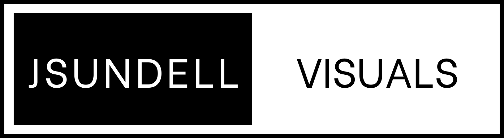
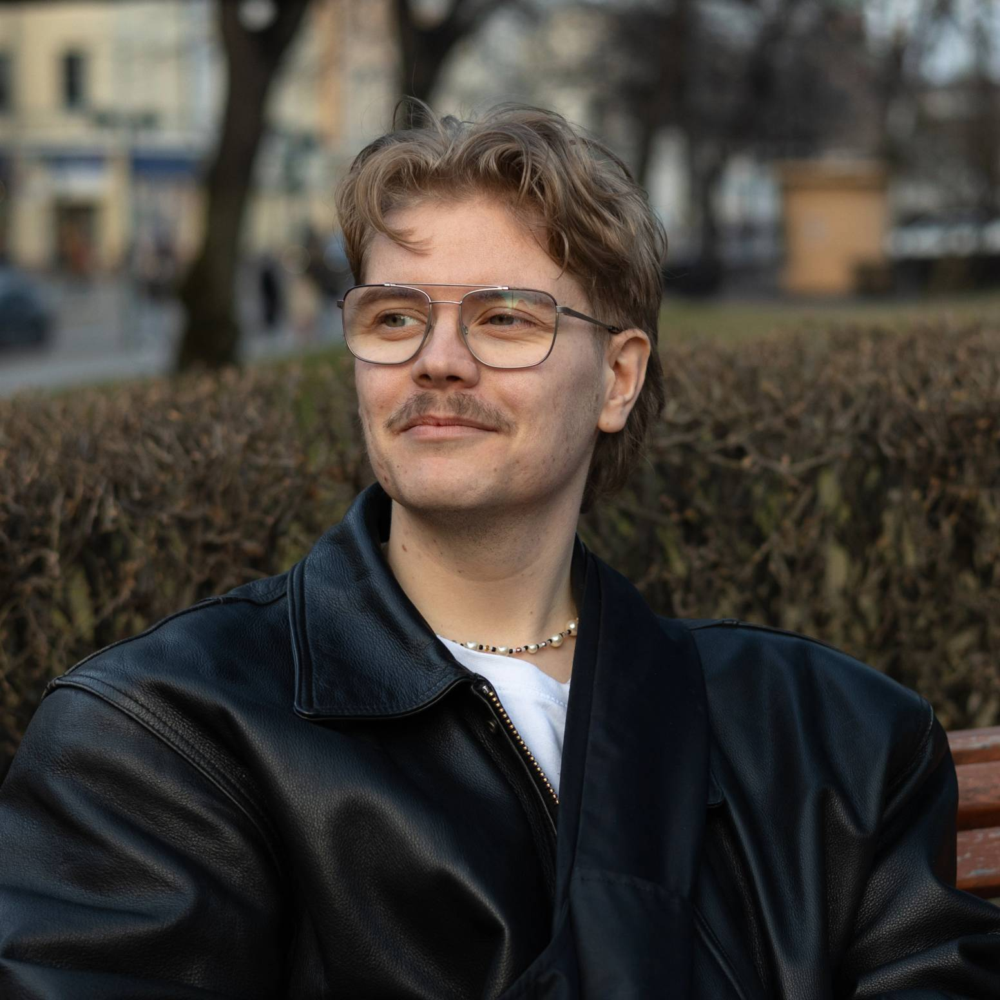

KUKA OLEN?
Olen suurimmilta osin itseoppinut valo- ja videokuvaaja Helsingistä. Valokuvausta olen harrastanut noin kahdeksan vuotta.
Itsenäisen opiskelun ja harrastamisen lisäksi olen opiskellut Laajasalon opistossa medialinjalla media-alaa
vuosina 2023-2024.
Valokuvausharrastus alkoi katukuvauksella, joka on lähellä sydäntäni edelleen. Sen lisäksi teen potrettikuvauksia.
Kiinnostuksena minulla olisi myös päästä kehittymään tapahtumakuvaajana erilaisissa tapahtumissa.
Media-alan lisäksi olen aloittanut tammikuussa 2026 opinnot Haaga-Helian ammattikorkeakoulussa
tietojenkäsittelyn tradenomi-koulutuksessa.
Tähtäimessäni on suunnata opinnoissa digitaaliseen palvelumuotoiluun. Tämän pääaineen lisäksi ottaa kursseja
muilta suuntautumisilta, kehittääkseni osaamista laajemmaksi, eikä keskittyä vain yhteen tiettyyn osa-alueeseen.